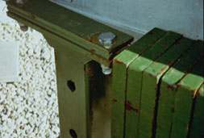
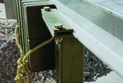
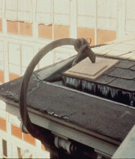
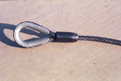
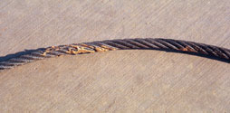
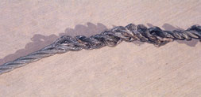
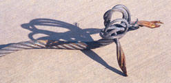
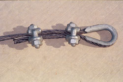

Review the elements of suspended scaffold safety with the following modules:
Anchorage
The safe use of a suspended scaffold begins with secure anchorage. The weight of the scaffold and its occupants must be supported by both the structure to which it is attached and by each of the scaffold components that make up the anchorage system.
NOTE: Except where indicated, these requirements also apply to multi-level, single-point adjustable, multi-point adjustable, interior hung, needle-beam, catenary, and float (ship) scaffolds.
Figure 1. An example of a parapet hook tieback that is perpendicular to the face of the building.
- Tiebacks must be secured to a structurally sound anchorage on the building or structure, which may include structural members, but not vents, electrical conduit, or standpipes and other piping systems.
- Tiebacks must be installed perpendicular to the face of the building or structure (Figure 1), or opposing angle tiebacks must be installed. Single tiebacks installed at an angle are prohibited.
- Tiebacks must be equivalent in strength to the suspension ropes and hoisting rope. [ and ]

-
Suspended scaffold outrigger beams must be stabilized to the floor or deck by :
- Counterweights
- Or bolts or other direct connections to the floor or deck.
-
Counterweights used to balance adjustable suspension scaffolds must be capable of resisting :
- At least 4 times the tipping moment imposed by the scaffold when it is operating at the rated load of the hoist.
- Or a minimum of 1½ times the tipping moment imposed by the scaffold when it is operating at the stall load of the hoist, whichever is greater.
- Only items specifically designed as counterweights may be used to counterweight scaffold systems.
- Masonry units, rolls of roofing felt, and other similar construction materials shall not be used as counterweights.
- Counterweights must not be made of flowable materials such as sand, gravel, and similar materials that can be easily dislocated.
- Counterweights must be secured by mechanical means to the outrigger beams (Figures 2 & 3) to prevent accidental displacement.
- Counterweights must not be removed from an outrigger beam until the scaffold is disassembled.
-

Figure 2. These counterweights are supposed to be secured to the outrigger system by a steel plate clamped with bolts...
-

Figure 3. ...but they have been pulled away by the weight on this yellow fall protection rope. Since fall protection must be independent of the scaffold, the counterweight violation was caused by this fall protection violation. If the counterweights had succeeded in working completely loose, what would have secured the lifelines when the scaffold came down?
Inadequate Counterweights Cause Two Deaths
Case Report:
- A 53-year-old painting foreman and a 28-year-old painter were killed when their scaffold collapsed. They were working on a 48-foot-high tank from a two-point suspension scaffold supported by two steel outriggers. The scaffold manufacturer specified 600 pounds of counterweight for this scaffold and load, but the painters had rigged the scaffold using only 200 pounds of counterweight (100 pounds per outrigger). The outriggers were not tied off or otherwise secured. No personal fall protection equipment was being used by either worker. While the two men were working on the scaffold, their weight caused the outriggers to slip, and the scaffold, rigging, and victims fell to the ground.
-
Suspended scaffold outrigger beams must be stabilized by :
- Bolts or other direct connections to the floor or deck.
- Or Counterweights
-
Direct connections to roofs and floors must be capable of resisting :
- At least 4 times the tipping moment imposed by the scaffold when it is operating at the rated load of the hoist.
- Or a minimum of 1½ times the tipping moment imposed by the scaffold when it is operating at the stall load of the hoist, whichever is greater.
Scaffold Attachments Fail; Two Die
Case Report:
- Two employees were sandblasting a 110-foot water tank while working on a two-point suspension scaffold 60-70 feet above the ground. The scaffold attachment point failed, releasing the scaffold cables, and the scaffold fell to the ground. The employees were not tied off independently, nor was the scaffold equipped with an independent attachment system.
Support

Adjustable suspension scaffolds are designed to be raised and lowered while occupied by workers and materials, and must be capable of bearing their load whether stationary or in motion.
NOTE: Except where indicated, these requirements also apply to multi-level, single-point adjustable, multi-point adjustable, interior hung, needle beam, catenary, and float (ship) scaffolds.
Figure 4. This job-made rig consists of some sections of scaffold decking and some aluminum ladders, hung from the roof. Who determined if it was capable of supporting its own weight and 4X its maximum intended load?
- Scaffolds and scaffold components must be capable of supporting, without failure, their own weight and at least 4 times their maximum intended load. (Figure 4)
-
Each suspension rope, including connecting hardware, must be capable of supporting, without failure, at least 6 times the maximum intended load applied to that rope while the scaffold is operating at the greater of either :
- The rated load of the hoist.
- Or 2 times the stall load of the hoist.
-
All suspension scaffold support devices, such as outrigger beams, cornice hooks, and parapet clamps, must:
-
Rest on surfaces capable of supporting at least 4 times the load imposed on them by the scaffold operating at the greater of either :
- The rated load of the hoist.
- Or 1½ times the stall capacity of the hoist. ()
- Be supported by bearing blocks. ()
- Be secured against movement by tiebacks installed at right angles to the face of the building or structure (), or by opposing angle tiebacks installed and secured to a structurally sound point of anchorage (structurally sound points of anchorage include structural members, but not vents, electrical conduit, or standpipes and other piping systems).
-
Rest on surfaces capable of supporting at least 4 times the load imposed on them by the scaffold operating at the greater of either :
- No more than two employees should occupy suspension scaffolds designed for a working load of 500 pounds (non-mandatory).
- No more than three employees should occupy suspension scaffolds designed for a working load of 750 pounds (non-mandatory).
- Scaffolds shall be altered only under the supervision and direction of a competent person.
-

Figure 5. Does this parapet look capable of supporting at least 4X the load imposed on it by the cornice hook? Should the cornice hook be tied back, and supported with bearing blocks?
-

Figure 6. How likely is this hook to slip? Has it been supported by bearing blocks? Does a length of manila rope tied with an overhand knot constitute adequate tieback?
Foreman Dies When Overloaded Scaffold Falls
Case Report:
- Six other boilermakers had just left a suspension scaffold when it fell about 392 feet along with the foreman, who was killed. The superintendent had ordered the scaffold's main support be disassembled before the scaffold was lowered to ground level. Rigging, welding machines, materials and supplies, etc., were placed on the scaffold, and two 1-inch wire rope hoist lines were cut free. This put the load on a single ¾-inch wire rope hoist line, which was overloaded by 255 percent, and on the diesel hoist located outside the chimney, which was overloaded by 167 percent. The superintendent was in a rush to get the system disassembled because a helicopter had been contracted to remove the structural members of the scaffold support system on Monday.
Figure 7. This is the same jury-rigged scaffold as in Figure 4. How can you tell if these components possess sufficient structural integrity?
- Scaffold components manufactured by different manufacturers must not be intermixed, unless they fit together without being forced, and the scaffold's structural integrity is maintained. (Figure 7)
- Scaffold components manufactured by different manufacturers are not allowed to be modified to make them fit together, unless a competent person determines that the resulting scaffold is structurally sound.
- Scaffold components made of dissimilar metals must not be used together unless a competent person has determined that galvanic action (rust) will not reduce the strength of any component below OSHA standards.
- Scaffold support devices such as cornice hooks, roof hooks, roof irons, parapet clamps, or similar devices must be made of steel, wrought iron, or materials of equivalent strength.
Scaffold with Improvised Components Fails; Worker Dies
Case Report:
-
A three-man crew was using an improvised suspension scaffold to paint the interior of a 68-foot-tall, 32-foot-diameter water tank. The scaffold consisted of an aluminum ladder used as a platform, and secured to steel "stirrups" made of steel bar stock bent into a box shape and attached to each end of the ladder. Wire cables from each stirrup ran to a common tie-off point. A cable from this common tie-off was rigged to a block-and-tackle used from ground level to raise and lower the platform. The block-and-tackle supporting the system was secured to a vertical steel pipe on top of the tank by a cable, which was fashioned into a loop by U-bolting the dead ends of a piece of wire rope.
The victim had been painting from one end of this scaffold while wearing a safety belt and lanyard attached to an independent lifeline. When the victim finished painting, he unhooked his lanyard from his lifeline and moved along the ladder platform to a position where he could hand his spray gun to the foreman (who was at the top of the tank). As the foreman took the spray gun, he heard a "pop" and saw the scaffold and the victim fall 65 feet to the floor of the tank.
Investigation of the incident revealed that the two U-bolts on the loop of cable supporting the block-and-tackle had loosened enough to allow the cable ends to slip through, causing the scaffold to fall. This particular rig had been used without incident every day for two week preceding this fatal fall.
- Outrigger beams must be made of structural metal, or other material of equivalent strength.
- Outrigger beams must be restrained to prevent movement.
- The inboard ends of outrigger beams must be stabilized by bolts or other direct connections to the floor or roof deck, or by counterweights.
- Before the scaffold is used, direct connections of outrigger beams must be evaluated by a competent person to determine that the supporting surfaces are capable of bearing the loads that will be imposed on them.
- When outrigger beams are not stabilized by bolts or other direct connections to the floor or roof deck, they must instead be secured by tiebacks.
- Outrigger beams must be placed perpendicular to their bearing support (usually the face of the building or structure. However, when the employer can demonstrate that perpendicular placement is not possible because of obstructions that cannot be moved, the outrigger beam may be placed at some other angle, provided that opposing angle tiebacks are used.
-
Outrigger beams shall be:
- Provided with stop bolts or shackles at both ends.
- Securely fastened together with the flanges turned out when channel iron beams are used instead of I-beams.
- Installed with all bearing supports perpendicular to the beam center line.
- Set and maintained with the web in a vertical position.
- Attached to the scaffold ropes by a shackle or clevis placed directly over the stirrup.
Failed Outrigger Leads to Fatality
Case Report:
- Two employees were painting the exterior of a three-story building when one of the two outriggers on their two-point suspension scaffold failed. One painter safely climbed back onto the roof while the other fell approximately 35 feet to his death. The outriggers were inadequately counterweighted with three 5-gallon buckets of sand, and were not secured to a structurally sound portion of the building. Neither painter was wearing an approved safety belt and lanyard attached to an independent lifeline.
- Suspension ropes supporting adjustable suspension scaffolds must have a diameter large enough to permit proper functioning of brake and hoist mechanisms.
- The use of repaired wire rope as suspension rope is prohibited.
- Wire suspension ropes must not be joined together except through the use of eye splice thimbles connected with shackles or coverplates and bolts.
- The load end of wire suspension ropes must be equipped with proper-size thimbles, and secured by eyesplicing or equivalent means ().
- Ropes must be inspected for defects by a competent person prior to each workshift, and after every occurrence which could affect a rope's integrity (see ).
-
Ropes are to be replaced when any of the following conditions exist:
- Any physical damage which impairs the function and strength of the rope (Figures & ).
- Kinks that might impair the tracking or wrapping of the rope around the drum or sheave of the hoist.
- Six randomly distributed wires are broken in one rope lay, or three broken wires in one strand in one rope lay ().
- Loss of more than one-third of the original diameter of the outside wires due to abrasion, corrosion, scrubbing, flattening, or peening.
- Heat damage caused by a torch, or any damage caused by contact with electrical wires.
- Evidence that the secondary brake has been activated during an overspeed condition and has engaged the suspension rope.
- Swaged attachments or spliced eyes on wire suspension ropes may not be used unless they are made by the manufacturer or a qualified person.
-
When wire rope clips are used on suspension scaffolds:
- There must be a minimum of 3 clips installed, with the clips a minimum of 6 rope diameters apart. ()
- Clips must be installed according to the manufacturer's recommendations.
- Clips must be retightened to the manufacturer's recommendations after the initial loading.
- Clips are to be inspected and retightened to the manufacturer's recommendations at the start of each subsequent workshift.
- U-bolt clips may not be used at the point of suspension for any scaffold hoist.
- When U-bolt clips are used, the U-bolt must be placed over the dead end of the rope, and the saddle must be placed over the live end of the rope.
- Suspension ropes are to be shielded from heat-producing processes. When acids or other corrosive substances are used on a scaffold, the ropes shall be shielded, treated to protect against the corrosive substances, or shall be of a material that will not be damaged by the substances.
Tip: Analysis of Bureau of Labor Statistics data for suspended scaffold fatalities from 1992-99 found that over 20 percent of fall deaths were due to suspension ropes breaking. This underlines the importance of inspecting ropes before every workshift.
-

Figure 8. This wire rope has a thimble secured by an eyesplice, as required on the load end of suspension ropes.
-

Figure 9. The construction adhesive on this wire rope could interfere with the operation of the hoist brakes.
-

Figure 10. This wire rope has "bird-caged" and become unsuitable for use.
-

Figure 11. The constant rotation of this rope as it ran through the hoist has caused the free end to twist and split.
-

Figure 12. There are only 2 clips fastening this wire rope. Is it safe? (The standard requires 3 clips).
Broken Suspension Ropes Result in Worker Deaths
Case Reports:
- A 39-year-old painter died after falling 40 feet when a scaffolding suspension rope broke. He was a member of a three-man crew engaged in the abrasive blasting and painting of the interior of a 48-foot-high, 30-foot-diameter steel water tank. At the time of the incident, the victim was standing on an outer end of the scaffold platform and was pulling on the suspension rope to raise that end of the scaffold. He fell when the rope broke and his end of the platform dropped to a vertical position. The victim was not using personal fall protection equipment, although it was available and was being used by a second painter. An investigation revealed that the ⅝-inch hoist rope broke at a point where it had been burned some time before the incident.
- Two victims and a co-worker were painting the side of a building in San Francisco. They were on a two-point suspension scaffold that did not have guardrails; the ropes suspending the scaffold were old and had not been inspected; and the employees were not wearing safety belts. When the left scaffold rope broke and the scaffold collapsed, one employee was killed and another fell to a nearby roof and broke both arms. The co-worker was left hanging on to the remaining scaffold rope.
Figure 13. Animation of what happens when a scaffold becomes stuck while traveling. View animation of this image.
- The stall load of any scaffold hoist must not exceed 3 times its rated load. (Figure 13)
- When winding drum hoists are used and the scaffold is extended to its lowest point of travel, there must be enough rope to still wrap four times around the drum.
- When other types of hoists are used, the suspension ropes must be long enough to allow the scaffold to travel to the level below without the rope end passing through the hoist, or else the rope end must be provided with means to prevent the end from passing through the hoist.
- Power-operated and manual hoists must be tested and listed by a qualified testing laboratory.
- Gasoline-powered hoists may not be used on suspension scaffolds.
- Gears and brakes of power-operated hoists used on suspension scaffolds must be enclosed.
-
In addition to the normal operating brake, both power-operated and manual hoists must have a braking device or locking pawl which engages automatically when a hoist experiences :
- An instantaneous change in momentum.
- Or an accelerated overspeed episode.
- Manually operated hoists must require a positive crank force to descend.
Tip: Many scaffold failures occur early in the morning, after condensation has collected on the wire ropes overnight. The preferred industry practice at the beginning of a shift is to raise the scaffold 3 feet, hit the brakes, then lower the scaffold and hit the brakes again. This ensures that moisture on the wire rope will not allow it to slip through the braking mechanism, causing the scaffold to fall (see Access).
Failed Scaffold Hoists Cause Worker Deaths
Case Reports:
- A 33-year-old male caulking mechanic was killed while sharing a two-point suspension scaffold that had already been rigged by workers from a window washing firm. Although he had brought safety belts and lifelines to the site, this equipment had been left in the company truck. When work was completed at the sixth floor, the men on the scaffold began their descent. Suddenly, the victim's end of the scaffold dropped to a vertical position, and the victim fell from the scaffold to the ground 60 feet below. The second man on the scaffold (the window washer) managed to cling to the scaffold and a nearby window ledge until he could be rescued. Inspection of the scaffold hoist revealed a defect in a centrifugal safety brake. This defect and the victim's possible failure to release the parking brake before beginning his descent caused one end of the scaffold to drop.
- Three workers were on a two-point suspension scaffold rated at 500 lbs. working weight. As the employees went up in the scaffold, the right side fell to the ground from an elevation of 20 feet. One worker managed to hold on, the other two fell with the scaffold, resulting in one worker dying and the other being hospitalized for extensive injuries. Investigation indicated that the scaffold motor assembly was improperly connected to the scaffold platform. The workers were wearing the available safety harnesses and lifelines but had not connected the lifelines.
- Two employees, the leadman and a trainee mechanic, were assigned to move a two-point suspended scaffold equipped with two SC40 hoists. They lowered the scaffold from the top roof some 16 feet to a small intermediate roof. The plan was to lower the scaffold an additional 20 feet to the main roof. After approximately two feet, the right-side hoist unit stopped. The employees thought that the overspeed brake had accidentally set. The leadman--the competent person on site--got out of the scaffold onto the roof and worked with the trainee to manually override and release the overspeed brake. This was done without inspecting the hoist for sufficient cable length. The right side hoist had only been set up with enough cable to go from the upper roof to the intermediate roof, a total of 16 feet (the total cable length measured 18 feet 5½ inches). When the brake was released, the three inches of cable left on the drum ran out and the hoist fell, causing the right side of the scaffold to drop. The trainee fell 18 feet, landed on a stored scaffold pick, and was lucky to sustain only a chipped ankle bone and a bruised calf. The company did not conduct a fall protection or competent person inspection, nor was a safety line or any fall protection used. The hoist worked as designed, but the wire rope safety device was manually overridden.
Access
While a worker may technically access a suspended scaffold from a ladder, the preferred industry practice is to do so from a rooftop or from the ground, and then raise or lower the scaffold to its working location. Therefore, ladder access is not discussed in this module. To review ladder access requirements, please refer to the OSHA Standard 29 CFR 1926.451(e) or the Supported Scaffolds module.
NOTE: Except where indicated, these requirements also apply to multi-level, single-point adjustable, multi-point adjustable, interior hung, needle beam, catenary, and float (ship) scaffolds.
Employees must be able to safely access any level of a scaffold that is 2 feet above or below an access point. [29 CFR 1926.451(e)(1)]
Tip: When a suspended scaffold sits overnight, water condensation may form on the wire ropes, making them slip through the braking device and cause the scaffold to fall. Before allowing workers onto the platform, a good safety practice is to raise the scaffold 3 feet, then lower it and hit the brakes to clear the moisture (see Support).
- Direct access to or from another surface is permitted only when the scaffold is not more than 14 inches horizontally and not more than 24 inches vertically from the other surface.
-
For two-point adjustable suspension scaffolds, access to one platform from another may only take place when the platforms :
- Are the same height.
- Are abutting.
- Have walk-through stirrups specifically designed for that purpose.
Unsafe Access Leads to Death on Suspended Scaffold
Case Report:
- An employee was restoring a building's exterior. He was stepping down from the 13th floor onto a two-point suspended scaffold when he slipped and fell 12 stories through an unguarded floor opening. He had failed to connect his safety belt to the lifeline. In addition, the scaffold did not have a guardrail on the side facing the building, where there was a 2½-foot-wide opening between the building and the scaffold created by indented window arches. The victim died from his injuries.
Fall Protection
The number one scaffold hazard is worker falls. Fall protection consists of either personal fall arrest systems or guardrail systems, and must be provided on any scaffold 10 feet or more above a lower level (two-point scaffolds require both PFAS and guardrail systems). This is especially critical with suspended scaffolds, because they often are operated at extreme elevations.
NOTE: Except where indicated, these requirements also apply to multi-level, single-point adjustable, multi-point adjustable, interior hung, needle beam, catenary, and float (ship) scaffolds.
- Each employee on a scaffold more than 10 feet above a lower level must be protected from falling to that lower level.
- Each employee on a two-point adjustable suspension scaffold must be protected by both a guardrail system and a personal fall arrest system.
Figure 14. The ropes pictured are vertical lifelines.
Are they safely secured to a fixed point of anchorage independent of the scaffold?
-
In addition to meeting the requirements of , personal fall-arrest systems used on scaffolds are to be attached by lanyard to a vertical lifeline, horizontal lifeline, or scaffold structural member.
NOTE: Vertical lifelines may not be used on two-point adjustable suspension scaffolds that have overhead components such as overhead protection or additional platform levels.- When vertical lifelines are used, they must be fastened to a fixed safe point of anchorage, independent of the scaffold, and be protected from sharp edges and abrasion. Safe points of anchorage include structural members of buildings, but not standpipes, vents, electrical conduit, etc., which may give way under the force of a fall. (Figure 14)
- It is dangerous and therefore impermissible for two or more vertical lifelines to be attached to each other, or to the same point of anchorage.
- When horizontal lifelines are used, they must be secured to two or more structural members of the scaffold.
- When lanyards are connected to horizontal lifelines or structural members, the scaffold must have additional independent support lines and automatic locking devices capable of stopping the fall of the scaffold in case one or both of the suspension ropes fail. These independent support lines must be equal in number and strength to the suspension ropes.
- On suspended scaffolds with horizontal lifelines that may become vertical lifelines, the devices used to connect to the horizontal lifeline must be capable of locking in both directions.
Tip: Almost all incidents that involve scaffold failure would not lead to fatality or serious injury if proper personal fall-arrest systems were in use. Hence, such incidents almost always involve two violations: One that causes the scaffold to fall, and the other when workers fail to use (or their employers fail to provide) appropriate safety harnesses, lanyards, lifelines, etc.
See Personal Fall Arrest Systems in the OSHA Construction eTool.
Unsafe/Unused Fall Arrest Systems Result in Fatalities
Case Reports:
- A 27-year-old cement finisher and a co-worker were dismantling suspended scaffolding at the 160-foot level inside a 172-foot-high, circular concrete silo. Both men were wearing safety belts with nylon rope lanyards secured to independent lifelines. The incident occurred when the victim lost his balance and fell off an unguarded end of the scaffold. The co-worker stated that he saw the victim fall and jerk upward as the lanyard caught him. When the victim's weight dropped back on the lanyard, it snapped, allowing him to fall to his death on a concrete floor. Examination of the lanyard after the event showed burn damage at several places, including the point of failure. The employer did not control inspection or distribution of this fall protection equipment. Instead, the equipment was kept in a common supply bin where the workers could readily obtain it when needed and return it when work was completed. The lanyard had been returned to the storage bin even though it had probably been damaged earlier during cutting and welding operations.
- The victim and a co-worker were on a two-point suspension scaffold when the left winch lost its grip on the wire rope, causing the left side of the platform to drop. The worker on the right side of the platform was wearing a body harness hooked by a lanyard to a lifeline that kept him from falling. The victim was on the left side of the platform and was wearing the same equipment, but he apparently did not have the lanyard hooked to his lifeline. He fell eleven floors and was killed.
- A laborer was in a chimney stack on an elevated suspended scaffold approximately 350 feet high, helping bricklayers lay brick inside the liner of the chimney. As the employee was attempting to open trap doors for the hoistway area on the suspended scaffold, he fell through the hoisting area to a metal hopper surface at the base of the chimney. He was killed. The victim was not wearing fall protection while on the scaffold, or while attempting to open the hoistway doors on the scaffold. The hoistway area was not guarded.
Figure 15. This scaffold does not have guardrails along all open sides and ends and has no midrail, and its occupants are not wearing personal fall-arrest systems.
- Guardrail systems must be installed along all open sides and ends of platforms , and must be in place before the scaffold is released for use by employees other than erection/dismantling crews. (Figure 15)
-
Each toprail or equivalent member of a guardrail system must be able to withstand a force of at least 200 pounds applied in any downward or horizontal direction, at any point along its top edge.
-
The top edge height of toprails on supported scaffolds must be between 36 inches and 45 inches. When conditions warrant, the height of the top edge may exceed the 45-inch height, provided the guardrail system meets all other criteria.
NOTE: The minimum top edge height on scaffolds manufactured or placed in service after January 1, 2000 is 38 inches.
-
The top edge height of toprails on supported scaffolds must be between 36 inches and 45 inches. When conditions warrant, the height of the top edge may exceed the 45-inch height, provided the guardrail system meets all other criteria.
-
Midrails, screens, mesh, intermediate vertical members, solid panels, etc., must be able to withstand a force of at least 150 pounds applied in any downward or horizontal direction, at any point along the midrail or other member.
- When midrails are used, they must be installed at a height approximately midway between the top edge of the guardrail system and the platform surface.
- When screens and mesh are used, they must extend from the top edge of the guardrail system to the scaffold platform, and along the entire opening between the supports.
- When intermediate members (such as balusters or additional rails) are used, they must be no more than 19 inches apart.
- Guardrails must be surfaced to prevent punctures or lacerations to employees, and to prevent snagging of clothing, which may cause employees to lose their balance.
- Ends of rails may not extend beyond their terminal posts, unless they do not constitute a projection hazard to employees.
-
In lieu of guardrails, crossbracing may serve as a toprail or midrail, providing the crossing point is :
- Between 20 and 30 inches above the work platform for a midrail.
- Or between 38 and 48 inches above the work platform for a toprail.
For other scaffolding guardrail requirements, see 29 CFR 1926.451(g)(4).
Employees Fall Due to Inadequate Guardrails
Case Reports:
- An employee was on a two-point suspension scaffold, approximately 25 ft. high, when the guardrail gave way. He was caught by his belt and lifeline, but after hanging for a few minutes, the lifeline broke and the employee fell to his death.
- Three employees were spray painting a water tower that was 125 ft. high and 30 ft. in diameter. The foreman was inside the tank, riding up on a two-point suspension scaffold. His assistants were outside. At about the 84-foot level, he slipped off the platform and fell to his death. Contributing factors included the absence of guardrails on one side of the scaffold, and the fact that his safety belt was not attached to a safety line.
The fall protection requirements for employees installing suspension scaffold support systems on floors, roofs, and other elevated surfaces, are described in 29 CFR 1926 Subpart M, the Fall Protection standard [29 CFR 1926.451(g)(1)]. (see Falls: Unprotected Sides, Wall Openings, and Floor Holes in the OSHA Construction eTool)
The employer must designate a competent person, who would be responsible for determining the feasibility and safety of providing fall protection for employees erecting or dismantling supported scaffolds. [29 CFR 1926.451(g)(2)]
Platform
Because the platform is the work area of a suspended scaffold, an inspection requires safety checks of both the platform structure and how the platform is used by the workers.
NOTE: Except where indicated, these requirements also apply to multi-level, single-point adjustable, multi-point adjustable, interior hung, needle beam, catenary, and float (ship) scaffolds.
Figure 16. This makeshift scaffold's platform is not 18" wide, nor does it have adequate guardrails, and the workers are not wearing fall protection.
- Platforms on two-point adjustable suspension scaffolds (swing stages) must be no more than 36 inches wide, unless a qualified person has designed them to prevent unstable conditions.
- The platform must be securely fastened to hangers (stirrups) by U-bolts, or by other means that make it capable of supporting its own weight and at least 4 times its maximum intended load.
-
Platforms are to be either ladder-type, plank-type, beam-type, or light metal-type.
NOTE: For more on plank-type platforms, see . - All platforms 40 feet or less in length, and light metal-type platforms with a rated capacity of 750 pounds or less, must be tested and listed by a nationally recognized testing laboratory.
- Scaffold platforms and walkways must be at least 18 inches wide, unless they are used in areas that the employer can demonstrate are so narrow that they must be less than 18 inches wide. In such cases, the platforms must be as wide as feasible, and fall protection must be provided. (Figure 16)
- Nothing that could cause a slip, trip or fall (i.e. tools, scrap material, chemicals, snow, ice, etc.) is allowed to accumulate on the platform.
- Devices whose sole function is to provide emergency escape and rescue may not be used as working platforms. This does not preclude the use of systems designed to function as both suspension scaffolds and emergency systems.
- Makeshift devices, such as boxes and barrels, may not be used on top of scaffold platforms to increase the height of the working level.
-
Ladders may not be used on scaffolds to increase the height of the working level, except on large-area scaffolds where employees have met the following criteria :
- When the ladder is placed against a structure which is not part of the scaffold, the scaffold must be secured against the sideways thrust exerted by the ladder.
- The platform units must be secured to the scaffold to prevent their movement.
- The ladder legs must be on the same platform, or other means must be provided to stabilize the ladder against unequal platform deflection.
- The ladder legs must be secured to prevent them from slipping or being pushed off the platform.
Non-mandatory guidelines for two-point suspended platforms:
-
Ladder-type platforms must have:
- Side stringers of clear straight-grained spruce, tied together with tie rods at least ¼ inch in diameter, passing through the stringers and riveted up tight against washers on both ends.
- Straight-grained oak, ash or hickory rungs at least 1⅞ inches in diameter, with ⅞ inch mortised into the side stringers at least ⅞ inch.
- Flooring strips spaced apart no more than ⅝ inch, (side rails may be up to 1 inch apart).
- All ladder-type platforms must be constructed in accordance with the (below).
-
Plank-type platforms must have:
- Unspliced planks no smaller than nominal 2 x 8 inches, connected on the underside with cleats beginning 6 inches from each end and spaced every 4 feet or less.
- A bar or other means securely fastened to each end of the platform to prevent it slipping off the hanger.
-
No more than a 10 foot span between hangers.
NOTE: For more on plank-type platforms, see .
-
Beam-type platforms must have:
- Side stringers of lumber no smaller than 2 x 6 inches set on edge.
- Floor boards laid flat and spaced no more than ½ inch apart, set snugly into the upper edge of the stringers, and securely nailed to 2 x 6-inch cross beams at intervals of no less than 4 feet.
- No more than a 12 foot span between hangers.
| Length of Platform | 12' |
14' & 16' |
18' & 20' |
22' & 24' |
28' & 30' |
|
|---|---|---|---|---|---|---|
Side Stringers, minimum cross section (finished sizes): |
At ends |
1¾" x 2¾" |
1¾" x 2¾" |
1¾" x 3" |
1¾" x 3" |
1¾" x 3½" |
At middle |
1¾" x 3¾" |
1¾" x 3¾" |
1¾" x 4" |
1¾" x 4¼" |
1¾" x 5" |
|
Reinforcing strip (minimum) |
A ⅛" x ⅞" steel reinforcing strip shall be attached to the side or underside, full length. |
|||||
Rungs |
Rungs must be 1⅛" minimum diameter with at least ⅞" in diameter tenons, and the maximum spacing must be 12" to center. |
|||||
Tie Rods: |
Number (minimum) |
3 |
4 |
4 |
5 |
6 |
Diameter (minimum) |
¼" |
¼" |
¼" |
¼" |
¼" |
|
Flooring minimum finished size |
½" x 2¾" |
½" x 2¾" |
½" x 2¾" |
½" x 2¾" |
½" x 2¾" |
|
Inadequate Planking on Scaffold Results in Fatal Fall
Case Report:
- A worker was raising the scaffold he was on to a new working height of approximately 78 feet. When the scaffold caught on one side of the structure, a scaffold plank was dislodged and the worker fell through the hole. He died from the resulting injuries.
For most activities, there must be no more than a 14-inch gap between the scaffold platform and the structure being worked on. For lathing and plastering, a gap of 18 inches is permitted. [29 CFR 1926.451(b)(3) and 29 CFR 1926.451(b)(3)(ii)]
- To prevent slippage, platforms must be cleated or otherwise restrained at each end, or else overlap centerline support at least 6 inches.
- Unless it is designed and installed to support employees and materials without tipping, or has guardrails that block employee access, each end of a platform may not extend over its support more than 12 inches (for platforms 10 feet or shorter in length) or more than 18 inches (for platforms more than 10 feet long).
- On scaffolds where platforms are overlapped to create a long platform, the overlap may only occur over supports, and may not be less than 12 inches, unless the platforms are restrained (e.g., nailed together) to prevent movement.
- On scaffolds where platforms are abutted to create a long platform, each abutted end must rest on a separate support surface (this does not preclude the use of shared support members such as "T" sections, hook-on platforms that rest on common supports, etc.).
When brackets are used to support cantilevered platforms, they must:
- Be seated with side-brackets parallel to the frames, and end-brackets at 90 degrees to the frames.
- Be used only to support personnel, unless the scaffold has been designed and built to withstand the tipping forces caused by other loads.
- Scaffold platforms must be able to support their own weight, plus four times the maximum intended load.
-
Do not load the scaffold or any component parts beyond their maximum capacity (their own weight and 4:1 the maximum intended load). A scaffold can be overloaded by :
- Too many people being on the platform.
- Too much material being stored on the platform.
- Or point loading, or concentrating too much of the load in one area.
-
Platforms must not deflect more than 1⁄60 of the span when loaded.)
NOTE: For more on plank-type platforms, see .
There are two kinds of falling object hazards associated with scaffolds. One hazard concerns the employees on the scaffold itself; the other concerns employees who work in or enter the area below the scaffold.
-
Each employee on a scaffold must be protected from falling hand tools, debris, and other small objects, by :
- Hardhats
- Toeboards, screens, or guardrail systems.
- Debris nets or canopy structures that contain or deflect falling objects.
- Placement of potential falling objects away from the edge of the surface from which they may fall.
-
Where there is a danger of tools, materials, or equipment falling from a scaffold onto employees below, they must be protected by the following measures :
- The area below the scaffold must be barricaded so employees are not permitted to enter.
- Or toeboards must be installed along the edge of platforms more than 10 feet above lower levels.
- Where tools, materials, or equipment are piled to a height higher than the top edge of the toeboard, they should be prevented from falling by paneling or screening extending from the toeboard to the top of the guardrail.
- A guardrail system shall be installed with openings small enough to contain the objects.
- Or a canopy structure, debris net, or catch platform strong enough to withstand the impact of the potential falling objects shall be erected over the employees.
-
When toeboards are used for falling object protection, they must be :
- Able to withstand a force of at least 50 pounds applied in any downward or horizontal direction, at any point along the toeboard.
- At least 3½ inches high from the top edge to the level of the walking/working surface.
- Securely fastened in place at the outermost edge of the platform, and not have more than ¼-inch clearance above the walking/working surface.
- Solid, or with openings not over 1 inch.
Two Workers Killed by Falling Objects While On Scaffolds
Case Reports:
- An employee was riding a swinging scaffold down the side of a water tank when the air line for a sand blaster became caught by the scaffold and pulled an air purifier from the walkway. The purifier struck the employee and knocked him from the scaffolding. He was not wearing his safety belt and was killed.
- While returning to the 18th floor of a building on a two-point suspension scaffold, two employees had risen to about the 4th floor when one of them was struck by a length of steel reinforcement bar. The rebar had apparently been loosened from the concrete on the 19th floor and fallen almost straight down. It pierced the victim on the top of his shoulder and continued through his body. He was killed.
Stability
Even if a suspended scaffold has been assembled in compliance with every applicable standard, employers and workers must continue to exercise caution and use sound work practices to assure their safety. Extreme weather, excessive loads, or damage to structural components can all affect a scaffold's stability.
NOTE: Except where indicated, these requirements also apply to multi-level, single-point adjustable, multi-point adjustable, interior hung, needle beam, catenary, and float (ship) scaffolds.
- Two-point suspension scaffolds must be tied or otherwise secured to prevent them from swaying, as determined to be necessary by a competent person.
- Window cleaners' anchors may not be used for this purpose.
-
In addition to direct connections to buildings (except window cleaners' anchors), acceptable ways to prevent scaffold sway include :
Workers Killed When Scaffolds Not Tied-Off
Case Reports:
- A worker was applying waterproofing to the exterior of a building from a two-point suspension scaffold. Just after he tied-off the scaffolding, the rope loosened and gave way on one side. According to witnesses, the worker slipped out of his safety belt and fell three floors to a concrete walkway and injured his head. He was pronounced dead on arrival at a hospital at 11:55 a.m.
- At approximately 2:00 p.m., a painter and a helper were scraping, glazing, and painting windows from a 32-foot-high two-point suspension scaffold. The employees stopped painting because it started to rain. They pulled ⅞-inch manila hoisting ropes up to the work platform and laid them over the top of the guardrail system at both ends of the 19-foot-long scaffold platform. The painter sent the helper to the sidewalk below to receive the tools and paint buckets. While lowering the materials to his helper, the painter was thrown from the scaffold platform when the platform tipped over. He died. The employees were not using fall protection, and the scaffold was not tied off.
- No more than two employees should occupy suspension scaffolds designed for a working load of 500 pounds (non-mandatory).
- No more than three employees should occupy suspension scaffolds designed for a working load of 750 pounds (non-mandatory).
- Scaffolds and scaffold components must be inspected for visible defects by a competent person before each shift, and after each occurrence that could affect a scaffold's integrity (such as being struck by a crane).
- Any part of a scaffold that has been damaged or weakened so that it no longer meets OSHA strength requirements must either be repaired, replaced, braced, or removed from service.
Damaged Components Lead to Fall; Inspection Could Have Saved Life
Case Report:
- Two laborers were working on a motorized two-point suspension scaffold, 70 feet above ground level, without safety belts, lanyards, or lifelines. An "eye" formed by three wire rope clips, which connected the wire rope to the C-hook, failed to hold, and one end of the scaffold came down. One employee fell to the ground, and the second employee at the other end was catapulted through an open window, where he was pulled to safety by office workers. Two of the rope clips were still attached to the end of the rope after the incident. The third clip fell to the ground, and was found to have stripped threads.
- Scaffolds shall not be moved horizontally while employees are on them, unless they have been designed for that purpose by a registered professional engineer, or in the case of mobile scaffolds, where the provisions of are followed.
- Two-point suspension scaffolds shall not be bridged or otherwise connected one to another during raising and lowering operations unless the bridge connections are articulated (attached), and the hoists properly sized.
-
Employees are not permitted to work on or from a scaffold during storms or high wind, unless a competent person has determined that it is safe, and those employees are protected by :
- Personal fall-arrest systems
- Or wind screens (when windscreens are used the scaffold must be secured against the anticipated wind forces).
- Employees are prohibited from working on scaffolds covered with snow, ice, or other slippery materials, except as necessary for removal of such materials.
Electrical Hazards
Suspended scaffolds are often made of metal and sometimes used in close proximity to overhead power lines. These factors introduce the risk of electrocution. However, proper clearance and maintenance reduce this risk.
NOTE: Except where indicated, these requirements also apply to multi-level, single-point adjustable, multi-point adjustable, interior hung, needle beam, catenary, and float (ship) scaffolds.
Figure 17. Not only is this job-made scaffold in violation of standards pertaining to capacity and fall protection, but the metal platform is in contact with a live powerline.
-
Scaffolds may be closer to overhead power lines than specified above if such proximity is necessary for the type of work being done, and if the power company or electrical system operator has been notified and has either :
- De-energized the lines
- Relocated the lines
- Or installed protective coverings to prevent accidental contact with the lines.
-
Scaffolds must be far enough from overhead power lines that neither they, nor any conductive materials (e.g. building materials, paint roller extensions, scaffold components) that may be handled on them, come closer than 10 feet to the power line. (Figure 17)
- Exception: Insulated power lines of less than 300 volts have a safe distance of only 3 feet.
Tip: Because it may be difficult to determine if a power line is insulated, or what its exact voltage is, the 10 ft. rule should always be applied.
Employee Dies After Contacting Power Line
Case Report:
- An employee was setting up a two-point suspension scaffold on top of a billboard platform that was 35 feet above the ground. As he was installing a 21-foot-long metal guardrail, it contacted a 34-kilovolt overhead power line located 8 feet from the billboard. The employee received an electric shock and fell to the ground. He sustained face and chest injuries as a result of the fall and died of these injuries two days after the incident.
When welding is being performed from suspended scaffolds, the following precautions must be taken, as they apply, to reduce the possibility of welding current arcing through the suspension wire ropes [29 CFR 1926.451(f)(17)]:
- An insulated thimble must be used to attach each suspension wire rope to its hanging support (such as cornice hook or outrigger). Excess suspension wire rope and any additional independent lines from grounding must also be insulated.
- The suspension wire rope must be covered with insulating material at least 4 feet (1.2 m) above the hoist.
- If there is a tail line below the hoist, it must be insulated to prevent contact with the platform. The portion of the tail line that hangs free below the scaffold must be guided or retained, or both, so that it does not become grounded.
- Each hoist must be covered with insulated protective covers.
- In addition to a work lead attachment required by the welding process, a grounding conductor must connected from the scaffold to the structure (see ). The size of this conductor must be at least the size of the welding process work lead, and this conductor must not be in series with the welding process or the work piece.
- An active welding rod or uninsulated welding lead must not be allowed to contact the scaffold or its suspension system.
- If the scaffold grounding lead is disconnected at any time, the welding machine must be shut off.
Subpart L Appendix E, Figure 18, contains an illustrated diagram of welding precautions for a suspended scaffold platform.
Text Version
Image depicts a suspended scaffold with the following labels:
- Insulated Tie-back
- Insulating Material (Excess wire rope stored on insulating material)
- Electrically Isolate Overhead Support or Insulted Thimble
- Non-conductive Wire Rope Cover
- Non-conductive Hoist Cover
- Electric Hoist Internally Grounded (3rd Wire)
- Power Hoist Electrical Cable with 3rd Wire Ground
- Stage (Platform)
- Wire Rope
- End of Wire Insulated from Structure and Ground
- To Hoist Power Source with 3rd Wire Grounded at Junction Box
- Welding Machine Power Source
- Welding Surface
- Welding Electrode Lead
- Work Lead Clamp (Located close to working area)
- Work Lead
- Stage Ground
- Non-conductive Building Face Roller
- Structure
Frayed Insulation Causes Arc, Damages Suspension Rope
Case Report:
- An employee was arc welding from a suspended scaffold. The work lead on the welder had frayed insulation in one place, and the bare conductor was exposed. The frayed section of welding cable was tied around the metal guardrail of the scaffold. Since the scaffold was not grounded, it became energized. This caused arcing between the scaffold and the building. The welding current passed through the wire rope supporting the scaffold, and the wire rope separated. The employee and the scaffold fell 50 feet to the ground. The employee was hospitalized for his injuries.
Because metal frame scaffolds are conductive, power tools, cords, etc., that suffer insulation failure can electrify the entire scaffold. This poses a risk of electrocution not just to the worker holding the tool, but to everyone who contacts the scaffold. Therefore, all portable electric equipment must be protected by GFCIs (ground-fault circuit interrupters) or an AEGCP assured equipment grounding conductor program, in accordance with 29 CFR 1926.404(b)(1)(i) (see Electrical Incidents: Lack of Ground-Fault Protection in the OSHA Construction eTool).
Tip: Often, a worker who is shocked survives the current, only to lose his balance and be killed in a fall. This is one more reason for always using fall protection.
Personnel Training and Competent Persons
Competent persons and trained workers are critical to safety on suspended scaffolds. Therefore, assessing personnel abilities is a vital part of scaffold design, erection, maintenance, and use, and should not be overlooked in scaffold inspections.
NOTE: Except where indicated, these requirements also apply to multi-level, single-point adjustable, multi-point adjustable, interior hung, needle beam, catenary, and float (ship) scaffolds.
- Scaffolds must be designed by a qualified person, and be constructed and loaded in accordance with that design.
- Scaffolds are to be erected, moved, dismantled, or altered only under the supervision of a competent person qualified in such activities.
Non-mandatory examples of criteria that will enable an employer to comply with 29 CFR 1926.451(a) are contained in 29 CFR 1926 Subpart L Appendix A.
- Scaffolds are to be erected, moved, dismantled, or altered only by experienced and trained employees who have been selected for that work by the competent person.
-
Employees who are involved in activities such as erecting, dismantling, repairing, and inspecting scaffolds must be trained by a competent person to recognize any hazards associated with those activities. Training shall include :
- The nature of scaffold hazards.
- Correct procedures for erecting, disassembling, etc. the type of scaffold in question.
- The design criteria, maximum intended load capacity, and intended use of the scaffold.
- Any other pertinent requirements.
-
Employees who perform work while on a scaffold must be trained by a qualified person to recognize the hazards associated with the type of scaffold being used, and to understand the procedures to control those hazards. Training shall include :
- The nature of any electrical hazards, fall hazards, and falling object hazards in the work area.
- The correct procedures for dealing with those hazards.
- The proper use of the scaffold, and the proper handling of materials on the scaffold.
- The maximum intended load and the load-carrying capacity of the scaffold.
- Any other pertinent requirements.
-
Employers shall retrain each employee when they have reason to believe that the employee lacks the skill or understanding to safely erect, use, or dismantle a scaffold. Such retraining is required in at least the following situations :
- Where changes at the worksite present a hazard for which an employee has not previously been trained.
- Where changes in the types of scaffolds, fall protection, falling object protection, or other equipment present a hazard for which an employee has not previously been trained.
- Where inadequacies in an affected employee's work indicate that the employee has not retained the necessary proficiency.